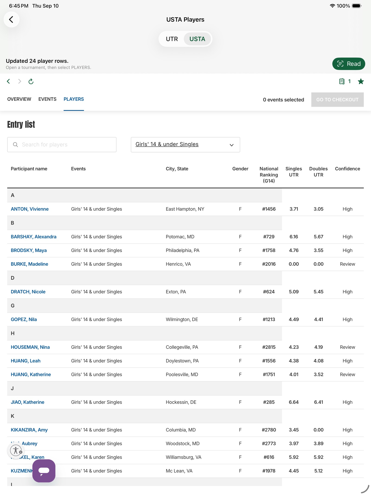
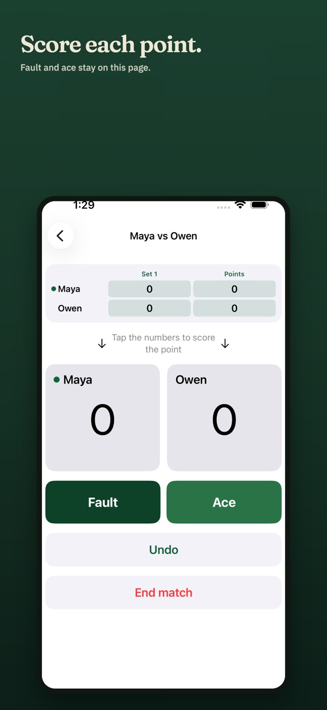
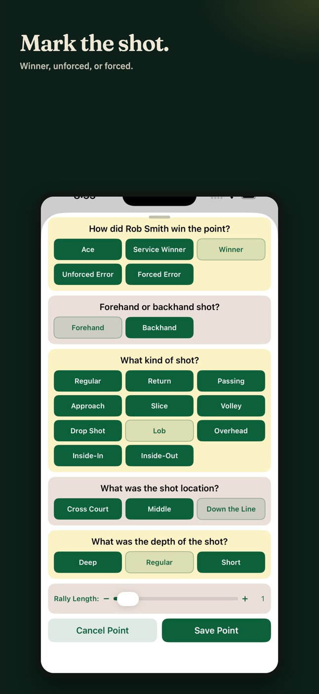
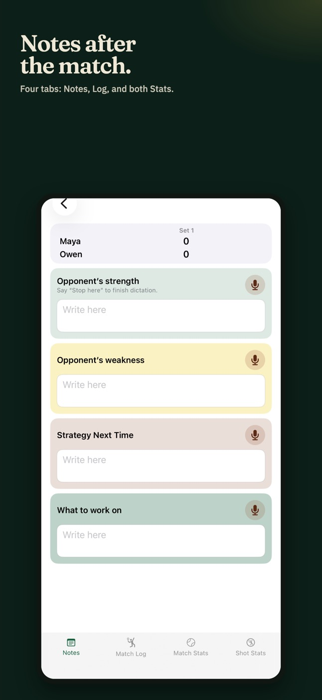

For junior tennis parents and coaches
Read the roster.
Score the match.
MainDraw looks up National Ranking, WTN and UTR on a USTA Players list, keeps your tournaments on a calendar, scores the match point by point, and helps plan the meal before it.
Free to download · iPhone, iPad and Android
Unofficial tool. Not affiliated with, endorsed by, or sponsored by USTA or Universal Tennis.


Look Up
Four taps from search to rankings
-
1
Find the event
USTA Search opens Find Tournaments with Sort & Filter ready. Search by location, dates and division, and save the setup when you will run it again.
-
2
Open Players
Open the tournament, then its Players page. Read needs the entry list on screen.
-
3
Read the roster
One tap reads the names. Singles stay one player per row; doubles teams stay paired.
-
4
Look Up
National Ranking, WTN and UTR land in columns you can sort. Tap a ranking number for the results that count, or a UTR number for that player's profile. Sign in to Universal Tennis with your own account once.
Scorecard
Mark every point, then keep what matters
-
1
Start the match
Names, first server, sets and scoring format. Scoring stays on its own page while you play.
-
2
Tap the winner
Tap a player for each point. Fault, Ace, Undo and End match sit on the same page. Mark the shot if you want: winner or error, stroke, direction, depth and rally length.
-
3
Write the notes
After the match, keep notes on the opponent: strengths, weaknesses, and what to try next time. Dictate with the microphone if typing is slow.
-
4
Read the match
Stats, a breakdown by shot, and a point-by-point log open from the same match.


Match Meal
What to eat before, between and after
-
Score a meal
Scan a barcode, pick from a restaurant menu, or type what is on the plate. MainDraw scores it for a junior on match day.
-
Score a photo
Take or choose a photo after a parent agrees. One photo a day. The photo is used to score the meal and is not kept.
-
Plan match day
A meal plan around the match time, with reminders on your phone.
Tournament calendar
Every entry deadline in one place
-
Save tournaments
Save from search results with one tap and see them by month. Upcoming lists what is next, with the venue and when entries close.
-
Deadline reminders
Get a reminder before an entry deadline. It is scheduled on your phone.
-
Family players
Accounts switches between family players and opens each player's Upcoming and Completed schedule.
-
UTR on the draw
After Look Up, the tournament draw shows Singles UTR or Doubles UTR beside each player you looked up.
Fuzz
A tennis buddy for your child
Hatch Fuzz together. Fuzz grows from matches and practice, and a win or a loss counts the same.
-
Before a match
Breathe with Fuzz, check in on feelings, and pick a cue word for a match-day cue card.
-
After a loss
Talk it out with Fuzz and keep good moments in a highlight jar.
-
Safe by design
No account, no ads, no chat. Fuzz keeps its data on the device, and a parent check guards hatching and settings.
No accounts required
Try Demo on the Home tab
Demo Mode opens a sample roster with rankings already filled in. Tap Read, then Look Up, and see the columns without a USTA or Universal Tennis sign-in.
- Download
- Free
- Subscription
- Look Up, calendar, Scorecard, Match Meal, Fuzz
- Price
- Shown by the App Store or Google Play for your country
- Always free
- Browse, bookmarks, Demo
Questions
What parents usually ask
For how USTA points, the best 6, bonus points and seeding work, see the USTA junior points tables and rankings FAQ.
What is MainDraw?
An unofficial app for junior tennis parents on iPhone, iPad and Android. It reads a USTA tournament Players list and looks up National Ranking, WTN and UTR, keeps tournaments on a calendar, scores matches point by point, scores match-day meals, and gives your child a tennis buddy called Fuzz.
Is this an official USTA or UTR app?
No. MainDraw is not affiliated with, endorsed by, or sponsored by USTA or Universal Tennis. You use your own accounts on those sites, and their terms apply.
What does it cost?
MainDraw is free to download. Browsing rosters, bookmarks and Demo Mode are free. Look Up, the tournament calendar, Scorecard, Match Meal and Fuzz are part of the MainDraw subscription. The App Store or Google Play shows the plans and the price for your country before you confirm.
What do I see when I tap a National Ranking number?
The singles and doubles that count for that rank, up to six of each. The last row of each group is the lowest score that counts. Tap a level name to open that tournament.
What happens to a meal photo?
Photo scoring is optional and needs a parent to agree first. The photo is sent to the scoring service, used to score the meal, and not kept. Barcode, menu and typed scoring work without a photo.
Where does my data go?
There are no ads, no analytics and no MainDraw account. USTA and Universal Tennis sign-ins, matches, notes and Fuzz stay on your phone. Look Up talks to USTA and Universal Tennis directly from the phone. See the privacy policy.
How do I get help or cancel?
Email maindraw.support@gmail.com. On iPhone, manage or cancel in Settings → your name → Subscriptions. On Android, in Google Play → Payments & subscriptions.